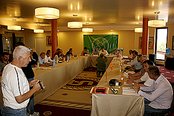
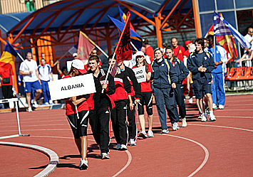
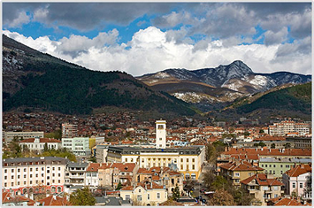
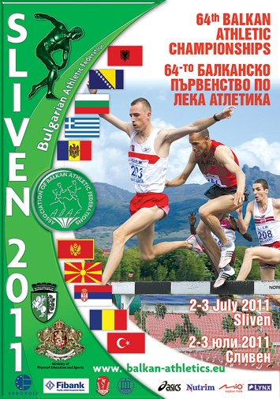

During the Congress of ABAF, held in conjunction with the 2010 European Athletics Convention in the Serbian capital Belgrade,
Bulgaria's Athletic President, Dobromir Karamarinov has been unanimously elected as the new President of the Balkan Athletics Federations (ABAF),
association that was founded in 1929 and has organised regional championships and major athletics events for over 80 years.
All 10 member federations ABAF (Albania, Bosnia and Herzegovina, Bulgaria, Greece, FYR of Macedonia, Moldova, Montenegro, Serbia, Romania and Turkey)
were present.
During the Congress of ABAF, held in conjunction with the 2010 European Athletics Convention in the Serbian capital Belgrade,
Bulgaria's Athletic President, Dobromir Karamarinov has been unanimously elected as the new President of the Balkan Athletics Federations (ABAF),
association that was founded in 1929 and has organised regional championships and major athletics events for over 80 years.
All 10 member federations ABAF (Albania, Bosnia and Herzegovina, Bulgaria, Greece, FYR of Macedonia, Moldova, Montenegro, Serbia, Romania and Turkey)
were present.


Start Lists: --> Download (Win RAR file)
Balkan Championships - Sliven'2011 - Gallery - Congress

Balkan Championships - Sliven'2011 - Gallery - Day 1

Balkan Championships - Sliven'2011 - Gallery - Day 2

Balkan Championships - Sliven'2011

July 2-3 - Balkan Championships: Sliven (BUL).
Team Ranking Women:
--> DOWNLOAD (PDF Document)Team Ranking Men:
--> DOWNLOAD (PDF Document)Prize Money Winners:
--> DOWNLOAD (PDF Document)
Facilities: --> DOWNLOAD (PDF Document)
Team Manual: --> DOWNLOAD (PDF Document)
General Programme: --> DOWNLOAD (PDF Document)
Official Time Table: --> DOWNLOAD (PDF Document)
Official Time Table and Heights of the bar for vertical jumps: --> DOWNLOAD (MS Word Document)
Prize Money: --> DOWNLOAD (PDF Document)
Îáùà èíôîðìàöèÿ: --> Âèæ òóê (MS Word äîêóìåíò)
Day 1 - Saturday, 2 July 2011:
| Event | Sex | Results |
| 3000m St. | Men | Results |
| Pole Vault | Women | Results |
| Hammer Throw | Men | Results |
| Long Jump | Men | Results |
| Shot Put | Men | Results |
| 400m Hurdles | Women | Results |
| 100m | Women | Results - CorrectedResults - Electronic |
| 100m | Men | Results |
| 400m Hurdles | Men | Results |
| Triple Jump | Women | Results |
| Discus Throw | Women | Results |
| High Jump | Men | Results |
| Javelin Throw | Women | Results |
| 1500m | Women | Results |
| 800m | Men | Results |
| 400m | Men | Results |
| 5000 m | Men | Results |
| 3000m | Women | Results |
| 4 x 100 m relay | Women | Results |
| 4 x 100 m relay | Men | Results |
100 m Men - O.C.:Results
100 m Women - O.C.:Results
400 m Men - O.C.:Results
400 m Women - O.C.:Results
Day 2 - Sunday, 3 July 2011:
| Event | Sex | Results |
| 3000m St. | Men | Results |
| Pole Vault | Men | Results |
| Hammer Throw | Women | Results |
| Triple Jump | Men | Results |
| Shot Put | Women | Results |
| 110m Hurdles | Men | Results |
| 100m Hurdles | Women | Results |
| 400m | Women | Results |
| 1500m | Men | Results |
| 800m | Women | Results |
| Long Jump | Women | Results |
| High Jump | Women | Results |
| Discus Throw | Men | Results |
| 200m | Women | Results |
| Javelin Throw | Men | Results |
| 200 | Men | Results |
| 5000 m | Women | Results |
| 3000m | Men | Results |
| 4 x 400 m relay | Women | Results |
| 4 x 400 m relay | Men | Results |
100 m Men - O.C.:Results
200 m Women - O.C.:Results
200 m Men - O.C.:Results